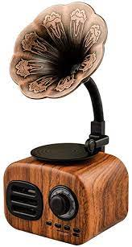

Retro Wireless Speaker Mini Outdoor Subwoofer Radio Phonograph Card Audio

Price
R350.00
In stock
There are 20 in stock!
Description
- Full-range speaker, high-medium-low tri-band coverage, powerful sound quality, retaining the original good sound.
- With Bluetooth 4.1 module, it is fast and easy to use, stable, convenient and energy-saving.
- A variety of compatible, convenient connection, 10 meters effective distance.
- Fast charging in 2-3 hours, continuous playing for about 6 hours.
- Answering by pressing the button, the telephone communication is very convenient, and the speaker is noise-reduced.
- Indicator light: blue light flashing (to be connected), blue light long (connected), red light (charging).
| Product Information |
| Interface type |
USB |
| Battery capacity |
1200mAh |
| Frequency response range |
100HZ-20KHZ |
| Output power |
5W |
| Signal to noise ratio |
≥70db |